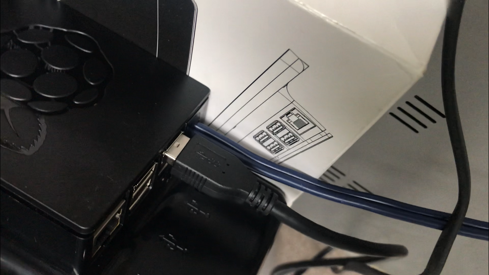
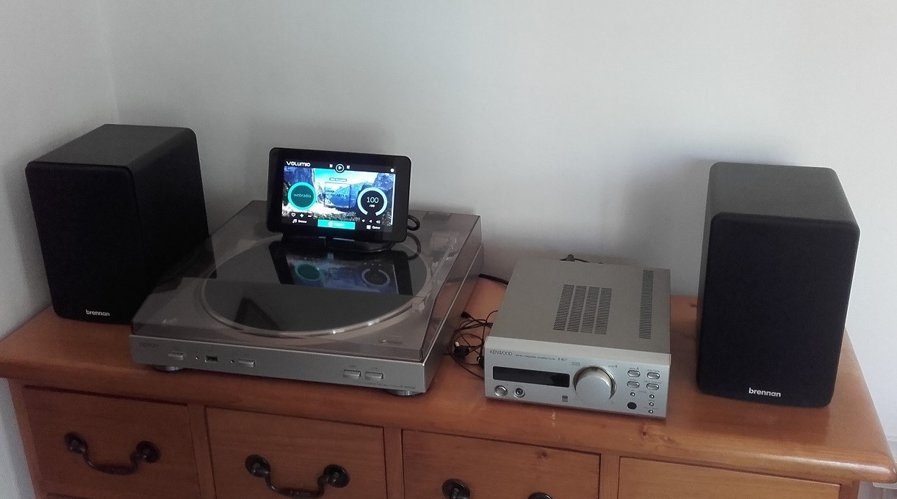
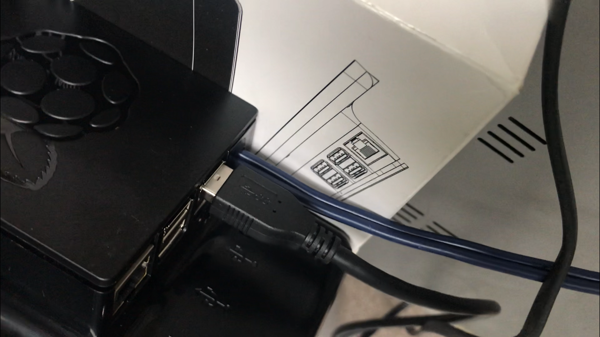
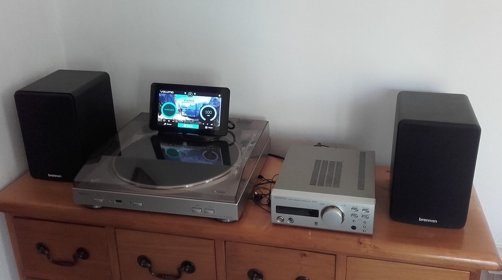

Volumio Project
Malcolm is a good friend of ours and has a Brennan JB7 and he has had it since they first came out but as they are obsolete and he's been having a few
problems with it I offered an alternative being a Volumio setup. I explained that Volumio is an awesome free open source music player and even setup one of my Raspberry
Pi's to show him how great and user friendly Volumio is. He gave me a backup of his music collection from his Brennan which was 220Gb's of music to get ready
and to check through for duplicates etc. I gave him a list of parts costing around £170 which he bought and when he received all he passed them to me to put
it all together. He bought a Raspberry Pi 3B+, official 7" touch screen + stand, HifiBerry DAC+lite, 5v 3Amp PSU, 8Gb micro SD card, 1Tb usb memory stick
and pair of phono leads to connect to his amp.
As I normally do I formatted the SD card and installed the latest version of
Volumio,
I put the SD card into the 3B+ and started the setup, connected to my WiFi and installed the Touch Screen plugin. After shutting down I started to attach the
3B+ to the official touch screen and tested the Volumio using the touch screen which I found to be spot on. I then looked at the HifiBerry DAC board in respect
of the case and noticed the phono connection would protrude out from the top and then have cables plugging in and I thought not happy with that. I removed the phono
connections from the HifiBerry audio board and drilled a hole in the case just after the Pi USB ports. I cut off one end of the phono leads and pushed through
the cable and put roughly 2 inch of heat shrink to later set in place as to stop cable being pulled.
I stripped the phono cables and prepared some small
heat shrink for the shield wires etc. After soldering the wires for left and right onto the audio board I attached it to the 3B+ using supplied mounts and
fitted it all back in the case. After selecting the HifiBerry DAC in settings for audio I tested it out on my old amp and it sounded fantastic. The 1Tb USB
memory stick was giving me some problems after the initial format to fat32 and the data transfer was really slow. I left it over night transferring his 4000
albums and when it eventually came to an end I safely removed it and plugged it into the Volumio to find not all albums were on the USB. I plugged it back into
laptop and checked it and sure enough only a few hundred albums on it, I reformatted it and tried it again and still same issue but it showed as a 1Tb but was
working correctly and so I contacted Malcolm to contact seller who refunded the next day. Malcolm bought another USB memory stick but 500Gb this time and I
did the same formatted to fat32 and transferred the music which I found slow again and sure enough many hours later it had done. I plugged it in the Volumio
and same thing again not all albums on the USB, how annoying is that and thinking is it my laptop and so I tried sending over my network. Now this was getting
a little extreme but it rules out my laptop USB and sure enough all files showed as transferred ok but when I plugged it in Volumio again still missing albums.
I tried a USB 320Gb SATA drive I had spare and noticed transfer speed much better and all albums was present when plugged into the Volumio. As I felt bad about
time wasted and with USB memory stick problems I gave Malcolm my spare SATA drive.
I must admit I presumed that the Volumio touch screen plugin would of
had a on-screen keyboard but as it happens it doesn't. I searched online for a solution and installed matchbox-keyboard via SSH with a couple of changes to a file
to start the keyboard in the background. The keyboard popped on-screen as expectedly when I touched the search option entered some text and pressed enter on the
virtual keyboard, keyboard went off screen and searched items was showing. It wasn't until I dropped off the Volumio that I was informed of a fault from the user
that keyboard not staying on-screen as it pops up for a split second, it also caused an issue with accessing the settings menu in order to shut it down or reboot.
Malcolm dropped it off and I tested it to find the keyboard wouldn't show up on the second time of requesting, searched online for a while to not find any
resolution and so I contacted the plugin developer on GitHub reporting this and I got a reply asking me some information to which I replied and got a response
that they would look into it asap. Now I wanted to get this project finished off and so I started trying different versions but same fault showing keyboard
for second use. I consider my fault finding skills to be good and I couldn't leave it alone but I tried clicking away from the keyboard instead of pressing enter
as I noticed that Volumio was doing the search whilst I was entering details. I found that clicking away from the keyboard took the keyboard off screen and
searched items was there on-screen so I tried entering the keyboard again and it appeared which was great as I tried it many times again.
I connected via
SSH and went to edit the keyboard.xml file and removed the temptation of pressing enter on the virtual keyboard. Every time it worked but I had seen many buttons
that you wouldn't use and so I removed some buttons and placed a few that were incorrectly positioned and realigned the keyboard.
Anyhow I felt proud of figuring
this out if its a work around or an actual fix hence the keyboard not being implemented in with the touch screen plugin installation. I have put information in a
GitHub repository on how to the install on-screen keyboard
Mouse over the pictures below for more information
 


